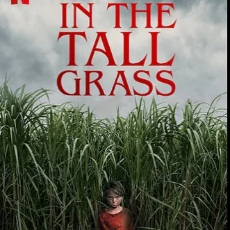
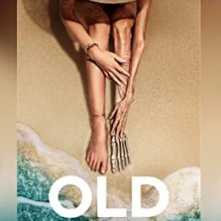

Room for one
Oxygen
She wakes inside a medical pod. With every tick of the oxygen gauge, you start listening to your own breathing.
Recommended ★ 4/5 · Scare 1/5Open water or a sealed room? Choose tonight’s film by the place you’d least like to be trapped.
She wakes inside a medical pod. With every tick of the oxygen gauge, you start listening to your own breathing.
Recommended ★ 4/5 · Scare 1/5
Pick this if looking down makes your stomach drop. At the top of a tower, a little water just out of reach feels impossibly precious.
Recommended ★ 4/5 · Scare 2/5
Two divers surface to find their boat gone. They can swim in any direction. The trouble is choosing one.
Recommended ★ 2/5 · Scare 1/5
For puzzle solvers. Even the minutes spent waiting for the game to start begin to look like clues.
Recommended ★ 3/5 · Scare 1/5
Someone sounds close enough to touch, yet you can’t see them. Follow a voice far enough and even your ears stop feeling trustworthy.
Recommended ★ 3/5 · Scare 1.5/5
Sand, blue water, a perfect family holiday. Then a small change in a familiar face transforms the whole view.
Recommended ★ 3.5/5 · Scare 1/5